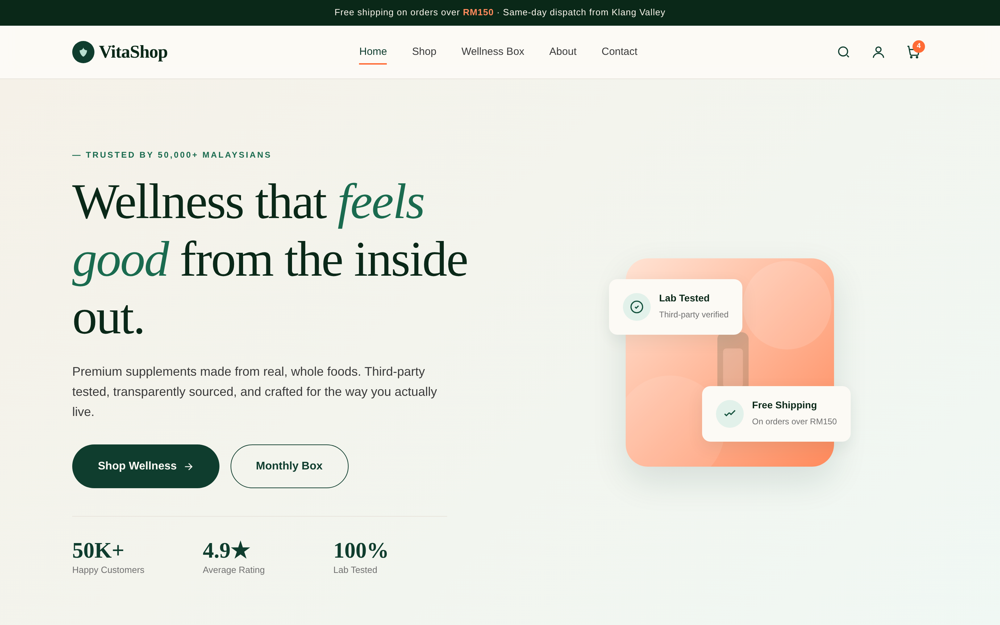
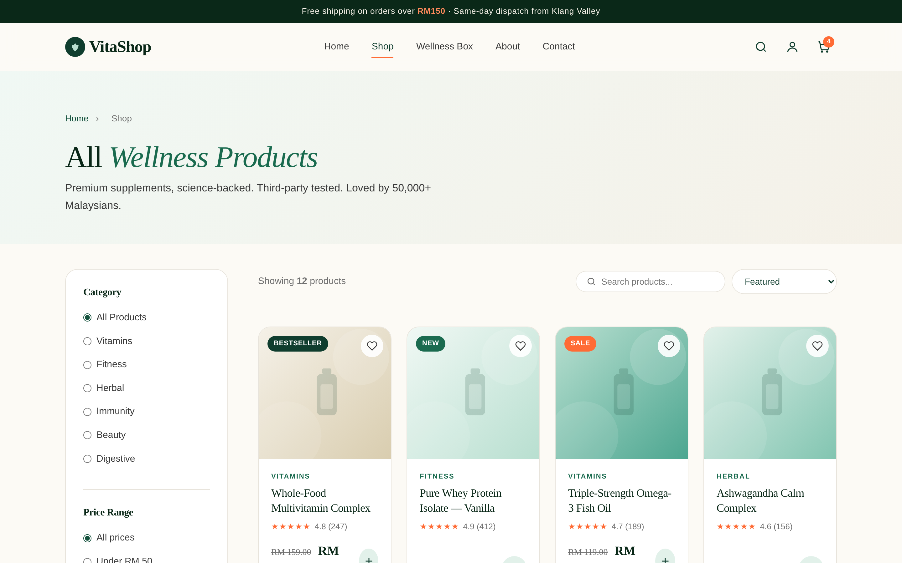
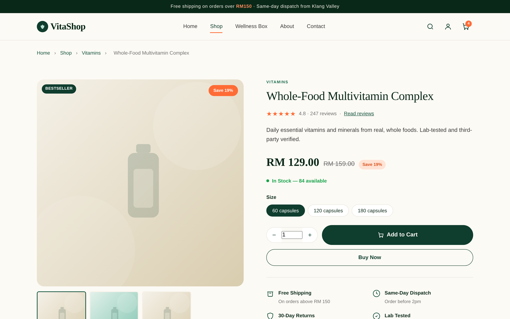
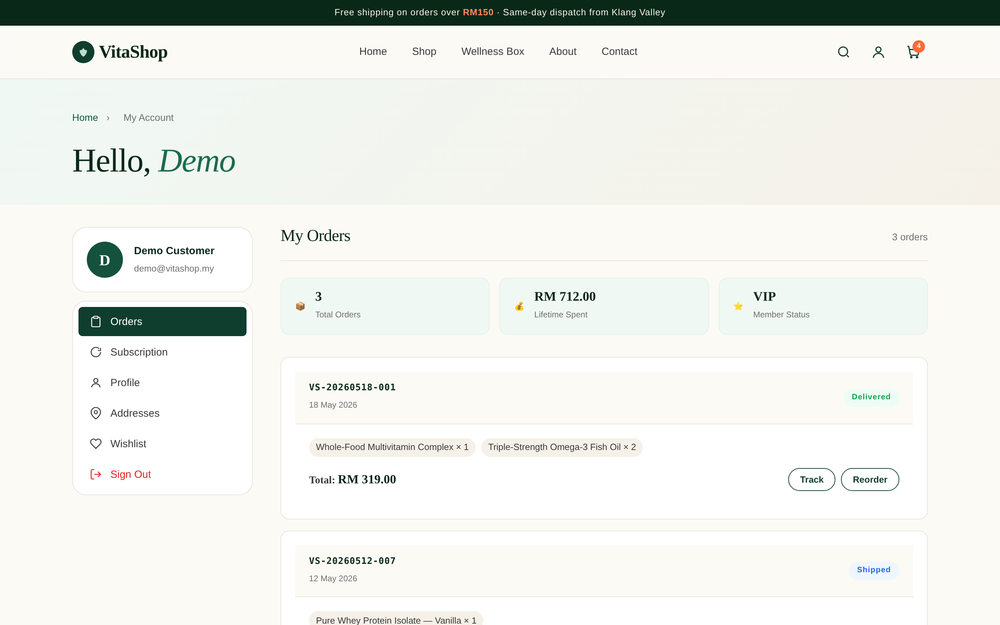
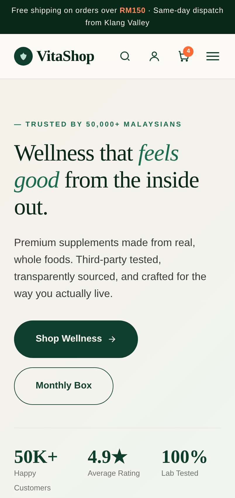
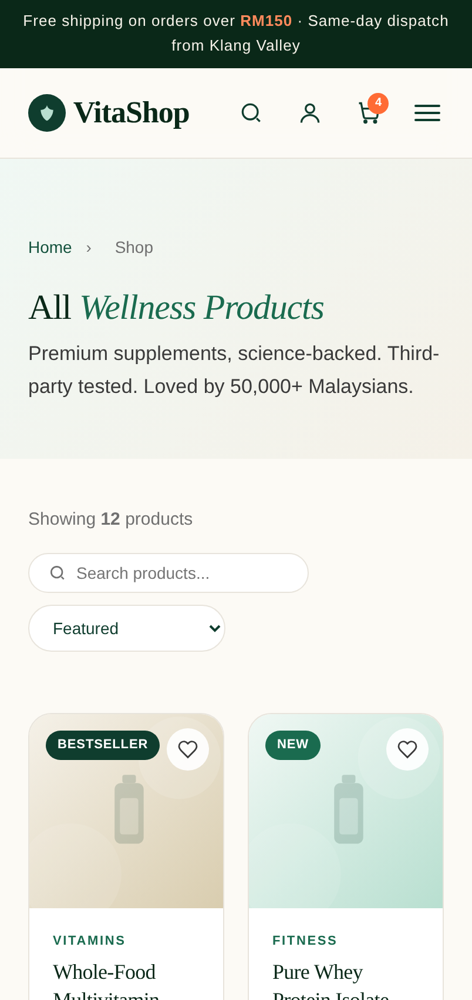
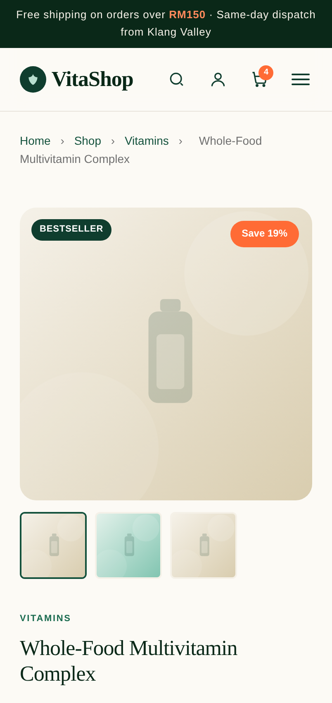

While the hardware gives VitaShop its physical foundation, it is the software that customers actually see and interact with every day. The software layer covers the pages that make up the online store, the platform that hosts them, the way information is stored, and the tools our team used to build everything together. Each decision below was guided by three goals: keeping the store fast for shoppers, easy for us to maintain, and affordable to run as the business grows.
4.1 Front-End Software
The front end is everything the customer sees inside their browser. VitaShop's entire storefront is built on three standard web technologies — HTML5 for the structure of each page, CSS3 for the styling and responsive layout, and plain (vanilla) JavaScript for interactive features such as the shopping cart, product filtering, live search and the image gallery. Before settling on this approach, we weighed a lightweight native stack against using a larger JavaScript framework.
| Criteria | Native Stack (HTML5 + CSS3 + JS) | JavaScript Framework (React / Next.js) |
|---|---|---|
| Learning curve | Gentle — standard web skills only | Steep — needs Node tooling and JSX |
| Performance | Very fast; no framework overhead | Larger download; requires a build step |
| Maintenance | Simple — edit a file and refresh | More complex dependency tree |
| Suitability | Ideal for a focused catalogue store | Better for very large, app-like systems |
| Cost | Free, open web standards | Free, but higher development time |
4.2 Application Pages (Software Structure)
Rather than one large program, VitaShop is made up of a set of individual web pages, each responsible for one stage of the shopping journey. They all share a single stylesheet (styles.css) and two scripts — app.js, which holds the shared logic such as the cart and login, and data.js, which holds the product catalogue. Keeping these shared files in one place means the design stays consistent and a single edit updates every page at once. The complete source code is kept on GitHub, and the table below lists the main pages that make up the system.
| Page | File | Purpose |
|---|---|---|
| Home | index.html | Landing page with featured products and categories |
| Shop | shop.html | Full catalogue with filters, live search and sorting |
| Product Details | product.html | Single product view, gallery, reviews, add to cart |
| Cart | cart.html | Review items, change quantity, apply a promo code |
| Checkout | checkout.html | Shipping details and Malaysian payment options |
| Account | account.html | Orders, subscription, profile and saved addresses |
| Sign In / Register | login.html, register.html | Customer authentication |
| About / Contact | about.html, contact.html | Company information and enquiries |
The figures below show how this code renders into the finished design that customers experience.




4.3 Hosting & Deployment Software
VitaShop's code lives on GitHub, and the live website is hosted on Vercel. The two are linked together: whenever we push an update to GitHub, Vercel automatically rebuilds and republishes the site within seconds, so customers always see the newest version without any files being uploaded by hand. This connection between the repository and the live design is what turns the source code into the working store shown in the figures above.
| Criteria | Vercel (Cloud Platform) | Traditional Shared Hosting |
|---|---|---|
| Deployment | Automatic from GitHub on every push | Manual file upload over FTP |
| Cost | Free tier, suitable for launch | Monthly fee from the start |
| Speed | Global CDN — very fast delivery | Single fixed server location |
| Scaling | Absorbs traffic spikes automatically | Limited by the chosen plan |
4.4 Data Storage Software
In the current version, information such as the shopping cart, the signed-in user and past orders is saved using localStorage, a small storage space built into every web browser. This lets the cart and account work instantly without needing a separate database server running in the background, which keeps the demonstration simple and free to host.
| Criteria | Browser localStorage | Server Database (MySQL) |
|---|---|---|
| Setup | None — built into every browser | Needs a server, schema and upkeep |
| Cost | Free | Hosting and administration cost |
| Best for | Prototype / demonstration | Large-scale production with many users |
4.5 Development & Supporting Software
The site was written in Visual Studio Code, a free and widely used code editor, while Git and GitHub handled version control so that every change is tracked and the team can work together without overwriting each other's work. We used Google Chrome DevTools throughout development to test how the layout responds across desktop, tablet and mobile screens (Figure 4.5). Notably, every tool in the VitaShop software stack is free and based on open web standards, which keeps the whole project lightweight and genuinely cost-effective.
VS CodeGitGitHubVercelChrome DevTools


